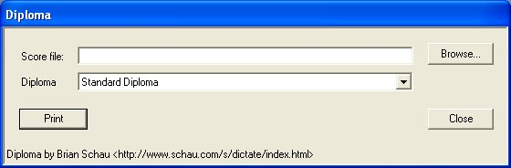
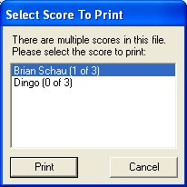
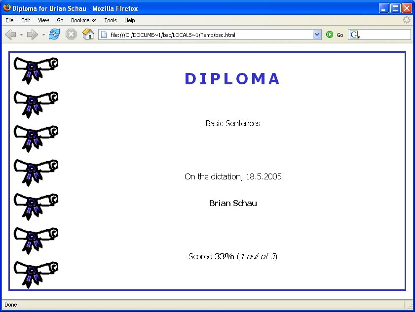

Diploma is used to print out the scores store in the Dictate Score database.
After a student completes a dictation the student is given the option to save his/her score. On the next HotSync the score file is transferred to the desktop. The student opens Diploma, locates the database file, selects Print and the score is printed to one of the installed printers.



The diploma is based on a simple HTML file. The html file must be placed in the Diploma installation directory (typically c:\Program Files\Schau.Com\Dictate\Diploma\vXrY\).
The html file must be named as you want it to look in the drop down box and the file must end in .htm. F.ex., the Standard Diploma is called:
Standard Diploma.htm
When Diploma starts it searchs the installation directory for any .htm files. The suffix is stripped from the name and the name is added to the drop down list.
The html file can contain whatever information you want. Diploma will search and replace the following strings:
| Key | Replacement | |
|---|---|---|
| @@SCORE@@ | The users score. | |
| @@ROUND@@ | Number of rounds in the dictation session. | |
| @@NAME@@ | User name. | |
| @@GROUP@@ | Group name. | |
| @@PCT@@ | Percentage ((score*100)/rounds). | |
| @@YEAR@@ | The year part of when the dictation was done. | |
| @@MONTH@@ | The month part of when the dictation was done. | |
| @@DAY@@ | The day part of when the dictation was done. | |
| @@BASE@@ | Base directory of the Diploma (used to locate graphics). |
The final page will be shown in the system wide default browser.
Have a look at the Standard Diploma.htm file for inspiration ...
The HTML page for the screenshot above can be viewed online. Download the Standard Diploma template.